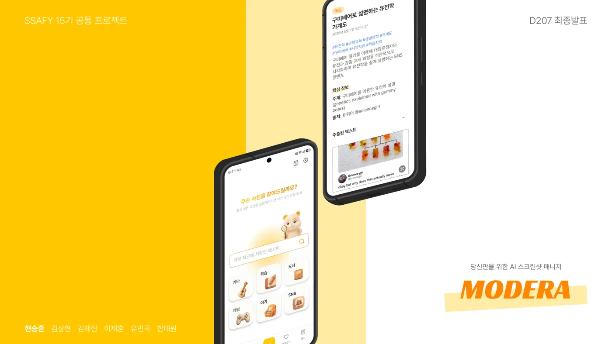

01
스크린샷 분류 · 자연어 검색
Modera

Screenshot managerAI 담당 (2인 중 1명)
스크린샷을 올리면 제목, 요약, 태그, 카테고리를 자동으로 붙이고, 기억나는 문장으로 다시 찾을 수 있는 안드로이드 앱입니다.
11s→7s
스크린샷 분석 시간
−35%
LLM 호출 비용
92.3%
카테고리 분류 정확도
7→1건
검색 결과 중 엉뚱한 결과
Case file+
Problem
스크린샷 한 장을 분석하는 데 11초가 걸렸습니다.
Measure
단계별 소요 시간을 기록해 보니 Gemini를 세 번 나눠 호출하고 있었습니다.
Fix
구조화 출력으로 호출을 한 번으로 합쳤습니다. 검색은 BM25와 bge-m3 벡터 검색을 RRF로 결합했습니다.
Result
분석 시간 11초에서 7초, 비용 35% 감소. 분류 정확도 92.3%, 관련 없는 검색 결과 7건에서 1건.